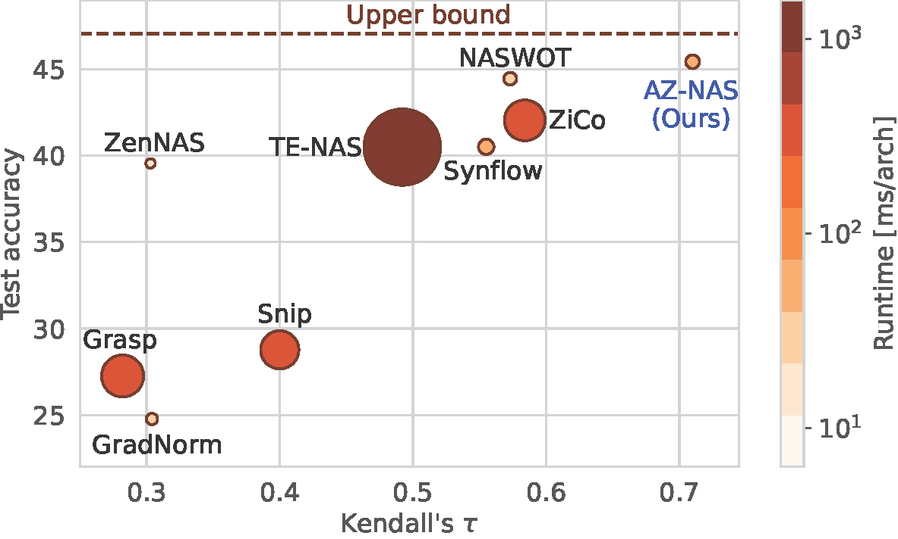
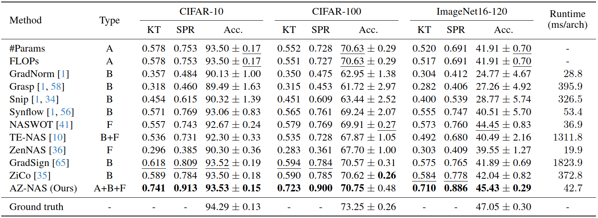

Comparison of training-free NAS methods on ImageNet16-120 of NAS-Bench-201. We compare correlation coefficients (Kendall's $\tau$) between predicted rankings of networks and the ground truth in the x-axis, and test accuracies for the selected networks in the y-axis. The runtime costs are visualized by the circle size and color. By assembling the proposed zero-cost proxies, AZ-NAS achieves the best consistency between predicted rankings of the networks and the ground truth efficiently, which helps to find the network with the highest accuracy.
Abstract
Training-free network architecture search (NAS) aims to discover high-performing networks with zero-cost proxies, capturing network characteristics related to the final performance. However, network rankings estimated by previous training-free NAS methods have shown weak correlations with the performance. To address this issue, we propose AZ-NAS, a novel approach that leverages the ensemble of various zero-cost proxies to enhance the correlation between a predicted ranking of networks and the ground truth substantially in terms of the performance. To achieve this, we introduce four novel zero-cost proxies that are complementary to each other, analyzing distinct traits of architectures in the views of expressivity, progressivity, trainability, and complexity. The proxy scores can be obtained simultaneously within a single forward and backward pass, making an overall NAS process highly efficient. In order to integrate the rankings predicted by our proxies effectively, we introduce a non-linear ranking aggregation method that highlights the networks highly-ranked consistently across all the proxies. Experimental results conclusively demonstrate the efficacy and efficiency of AZ-NAS, outperforming state-of-the-art methods on standard benchmarks, all while maintaining a reasonable runtime cost.
Results

Quantitative comparison of the training-free NAS methods on NAS-Bench-201. We categorize the types of zero-cost proxies into architectural (A), backward (B), and forward (F) ones depending on the inputs of the proxies. We report Kendall's $\tau$ (KT) and Spearman's $\rho$ (SPR) computed with all candidate architectures, together with an average runtime. We also provide the average and standard deviation of test accuracies (Acc.) on each dataset, where they are obtained through 5 random runs. To this end, we randomly sample 3000 candidate architectures for each run and share the same architecture sets across all the methods. All results are reproduced with the official codes provided by the authors.
We show in this table a quantitative comparison between AZ-NAS and the state-of-the-art training-free NAS methods on NAS-Bench-201. We report correlation coefficients between predicted and ground-truth rankings of networks, and top-1 test accuracies of selected networks. We can see that AZ-NAS achieves the best ranking consistency w.r.t the performance in terms of Kendall's $\tau$ and Spearman's $\rho$, outperforming others by significant margins across all the datasets. This enables discovering networks that consistently show better performance compared to the networks chosen from other methods. The training-free NAS methods in this table focus on capturing a single network characteristic using either activations or gradients only, except for TE-NAS requiring lots of computational costs. On the contrary, AZ-NAS examines networks from various perspectives based on activations, gradients, and FLOPs, providing a comprehensive evaluation of networks. Moreover, the proposed proxies tailored for AZ-NAS are computationally efficient and can be computed simultaneously within a single forward and backward pass.
Paper
|
|
|
|
J. Lee and B. Ham
AZ-NAS: Assembling Zero-Cost Proxies for Network Architecture Search
In IEEE/CVF Conference on Computer Vision and Pattern Recognition (CVPR) , 2024
[arXiv][Code]
|
Acknowledgements
This work was partly supported by IITP grants funded by the Korea government (MSIT) (No.RS-2022-00143524, Development of Fundamental Technology and Integrated Solution for Next-Generation Automatic Artificial Intelligence System, No.2022-0-00124, Development of Artificial Intelligence Technology for Self-Improving Competency-Aware Learning Capabilities) and the KIST Institutional Program (Project No.2E31051-21-203).